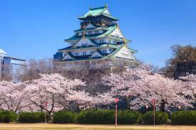
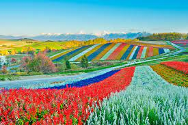
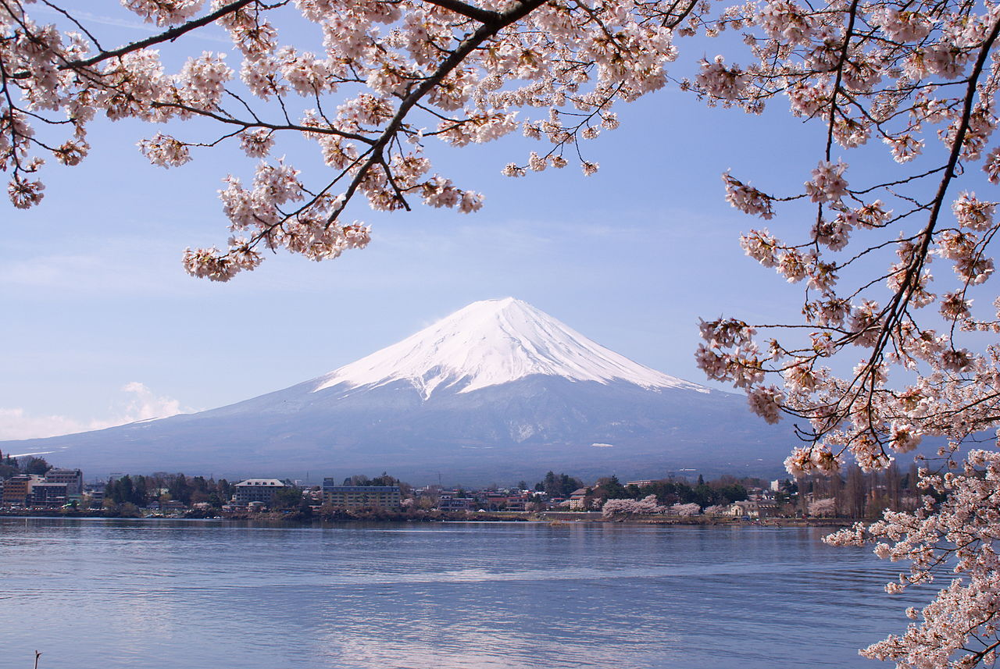
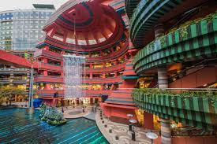
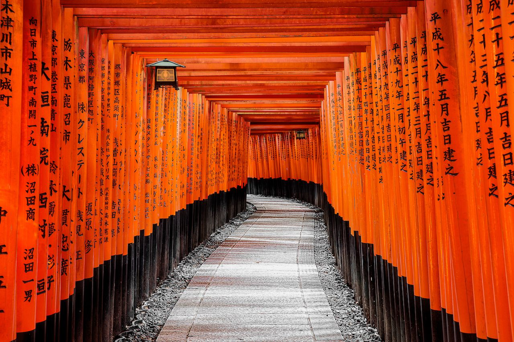

Une expérience japonaise complètement unique. Le Japon offre un éventail incroyable d'expériences culturelles et culinaires, des plus sublimes aux plus exaltantes. Nous ne croyons pas qu'il existe une taille unique et concevons votre voyage juste pour vous.

Osaka
Osaka est une grande ville portuaire et un centre commercial sur l'île japonaise de Honshu. Il est connu pour son architecture moderne, sa vie nocturne et sa cuisine de rue copieuse.
Découvrir

Hokkaido
Hokkaido, la plus septentrionale des îles principales du Japon, est connue pour ses volcans, ses sources chaudes naturelles (onsen) et ses domaines skiables.
Découvrir

Le mont Fuji
Le mont Fuji au Japon est un volcan actif à environ 100 kilomètres au sud-ouest de Tokyo. C'est le plus haut sommet du pays, à 3 776 mètres. Lieu de pèlerinage depuis des siècles, il est considéré comme l'une des 3 montagnes sacrées du Japon, et les randonnées au sommet restent une activité populaire.
Découvrir

Fukuoka
Fukuoka, capitale de la préfecture de Fukuoka, se trouve sur la rive nord de l'île japonaise de Kyushu. Elle est connue pour ses temples anciens, ses plages et ses centres commerciaux modernes, dont Canal City.
Découvrir

Kyoto
Kyoto, autrefois capitale du Japon, est une ville de l'île de Honshu. Il est célèbre pour ses nombreux temples bouddhistes classiques, ainsi que pour ses jardins, ses palais impériaux, ses sanctuaires shintoïstes et ses maisons traditionnelles en bois.
DécouvrirClassic - CAD $700-$900 par jour
Un voyage qui se situe dans la gamme de prix Classic comprend généralement un mélange réfléchi d'hébergements de milieu/haut de gamme, tous vos transports dans le pays (par train) et de merveilleux guides privés (plus beaucoup de temps à explorer en toute autonomie).
Premium - CAD $900-$1200 par jour
Un voyage qui s'inscrit dans la gamme de prix Premium comprend généralement un joli mélange d'hébergements haut de gamme/de luxe, tous vos transports dans le pays (en train et en véhicule privé, le cas échéant) et de merveilleux guides privés (plus autant de temps libre que vous aimeriez)
De Luxe - CAD $1200-$1500 par jour
Un voyage qui tombe dans la gamme de prix de luxe comprend généralement un hébergement haut de gamme, tous vos transports dans le pays (par train en première classe et véhicule privé, en cas échéant) et de merveilleux guides privés (plus autant de temps libre que vous aimeriez).
Roberta K., Ontario
Nous avons passé un moment incroyable au Japon. Malgré le temps super chaud et ridicule...
Lire plus »
Lisa et Ruben, Floride
Nous avons passé un moment incroyable au Japon. Nous ne pouvons pas vous remercier assez...
Lire plus »
John Given, Los Angeles
Merci encore d'avoir planifié un voyage aussi spécial et parfaitement organisé pour nous...
Lire plus »